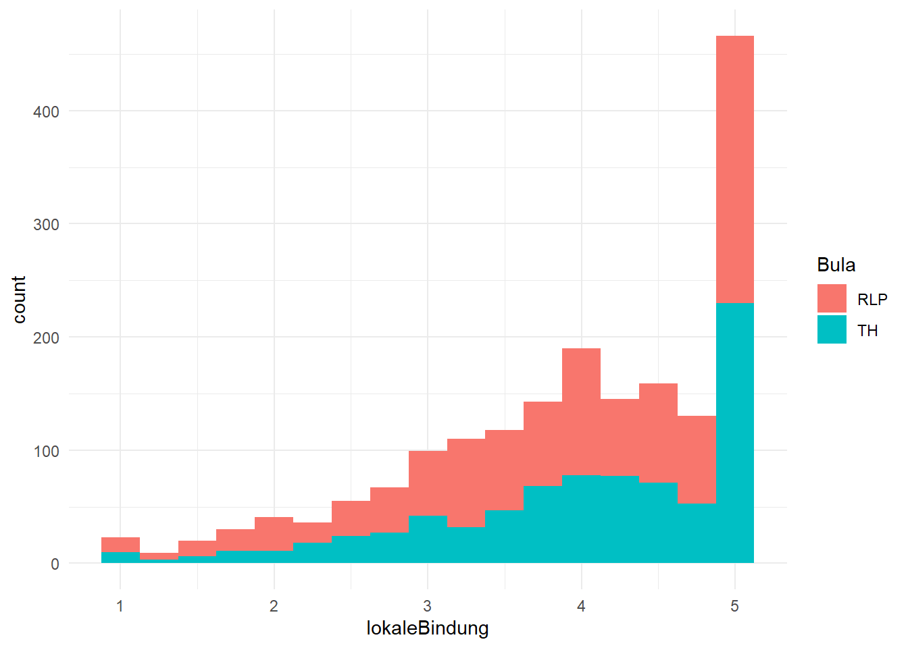
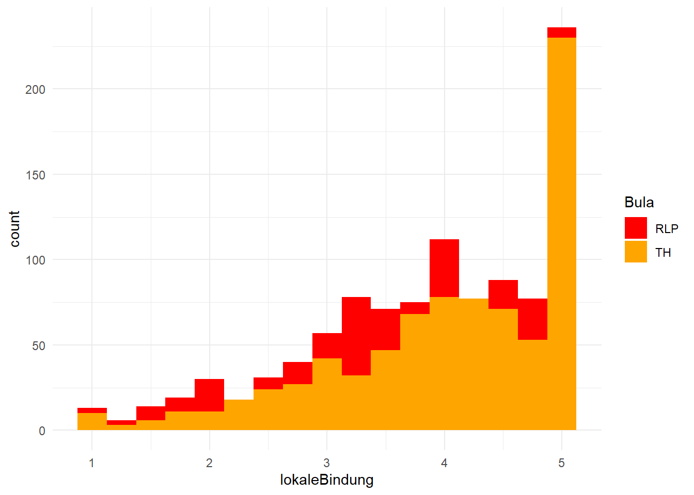
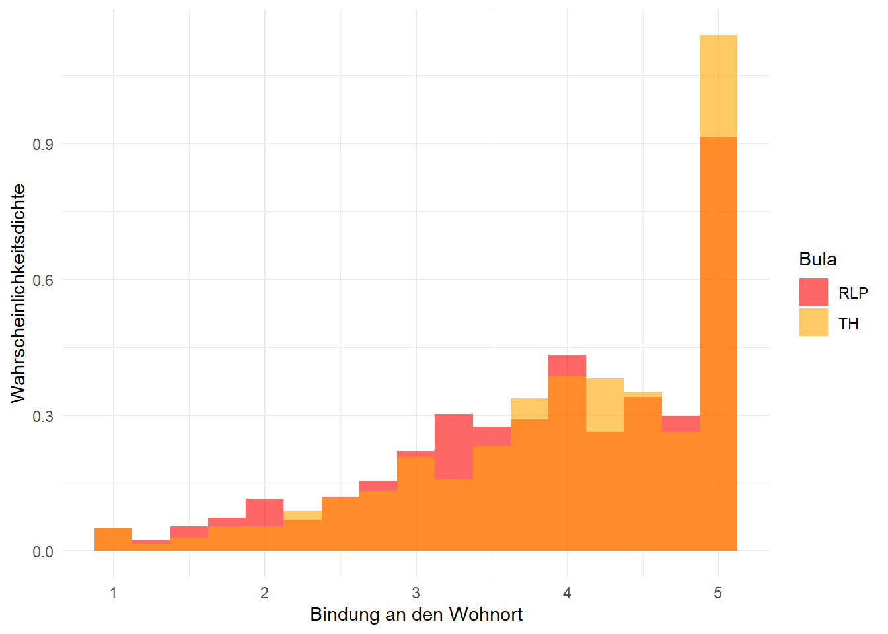

Auch für den t-Test benötigen wir das ‘tidyverse’ und das Paket ‘effectsize’. Außerdem lesen wir den Datensatz ein und ändern die Optionen so , dass kleine Zahlen in einem uns gewohnten Format angezeigt werden.
# Lädt das tidyverselibrary(tidyverse)
── Attaching core tidyverse packages ──────────────────────── tidyverse 2.0.0 ──
✔ dplyr 1.1.4 ✔ readr 2.1.5
✔ forcats 1.0.0 ✔ stringr 1.5.1
✔ ggplot2 3.5.1 ✔ tibble 3.2.1
✔ lubridate 1.9.3 ✔ tidyr 1.3.1
✔ purrr 1.0.2
── Conflicts ────────────────────────────────────────── tidyverse_conflicts() ──
✖ dplyr::filter() masks stats::filter()
✖ dplyr::lag() masks stats::lag()
ℹ Use the conflicted package (<http://conflicted.r-lib.org/>) to force all conflicts to become errors
# Lädt effectsizelibrary(effectsize)# Liest die Daten eindf_lokal <-read.csv("Daten/lokalkommunikation.csv")# Stellt ein, dass sehr kleine Zahlen normal dargestellt werdenoptions(scipen =999)
Außerdem werden wir in diesem Kapitel mit den Spalten A501_01 bis A501_04 arbeiten. In den entsprechenden Fragen sollten die Befragten angeben, wie stark ihre Bindung zu ihrem Wohnort ist (z.B. “Ich fühle mich als Teil meines Wohnorts”), wobei der Wert 1 für geringen Zustimmung zu den Aussagen steht und der Wert 5 für hohe Zustimmung.
Da diese vier Variablen alle dasselbe Konstrukt abfragen, berechnen wir zunächst pro Person einen Mittelwert aus den vier Spalten. Dazu nutzen wir zunächst die Funktion rowwise() aus dem dplyr-Paket. Damit sagen wir R, dass die nachfolgenden Zeilen jeweils für jede einzelne Zeile im Datensatz ausgeführt werden sollen. Anschließend nutzen wir mutate() und darin mean(), um den Mittelwert zu berechnen. Wichtig ist, dass wir abschließend die ungroup()-Funktion nutzen, da R ansosnten versucht, auch den nachfolgenden Code, der sich auf den Datensatz bezieht, versucht pro Zeile durchzuführen.
# berechnet pro Person einen Mittelwert der Spalten A501_01 bis A501_04df_lokal <- df_lokal |>rowwise() |>mutate(lokaleBindung =mean(c(A501_01, A501_02, A501_03, A501_04), na.rm =TRUE)) |>ungroup()
10.2 t-Test durchführen
Um einen t-Test durchzuführen benötigen wir die t.test()-Funktion. Damit können wir alle drei Varianten des t-Tests rechnen, die wir im Video kennengelernt haben.
10.2.1 Einstichproben t-Test
Wie im Video besprochen berechnen wir einen t-Test für eine Stichprobe immer dann, wenn wir wissen möchten, ob sich der von uns gemessene Mittelwert von einem a priori definierten Wert unterscheidet. Wenn wir z.B. wüssten, dass die Menschen in Thüringen und Rheinland-Pfalz sich im Durchschnitt nicht sehr an ihren Wohnort gebunden fühlen (also z.B. der Wert 2 dem Mittelwert der Grundgesamtheit entspricht), könnten wir mit dieser Variante des t-Tests prüfe, ob das auch auf unsere Stichprobe zutrifft.
Um diesen Test durchzuführen, übergeben wir der t.test()-Funktion zunächst die Daten. Hier also die Spalte lokaleBindung. Wichtig ist, dass wir in diesem Beispiel keine Pipe (|>) nutzen und anders als bei der Regression sagen wir der t.test()-Funktion auch nicht, welchen Datensatz wir benutzen. Wir müssen also mit Hilfe des Dollarzeiens erst den Datensatz und dann die Spalte angeben, so wie wir es in Kapitel 2 kennengelernt haben. Außerdem nutzen wir das Argument mu. Damit können wir den Wert angeben, gegen den wir unseren Stichprobenmittelwert testen wollen.
# berechnet einen einstichproben t-TesttTest1sample <-t.test(df_lokal$lokaleBindung, mu =2)# zeigt die Ergebnisse antTest1sample
One Sample t-test
data: df_lokal$lokaleBindung
t = 83.155, df = 1840, p-value < 0.00000000000000022
alternative hypothesis: true mean is not equal to 2
95 percent confidence interval:
3.889405 3.980683
sample estimates:
mean of x
3.935044
Schauen wir uns das Ergebnis an. Oben werden uns der t-Wert, also die Teststatistik, die Freiheitsgrade (df) und der p-Wert des Tests angezeigt. Darunter erinnert uns R daran, welche Hypothese wir getestet haben. Darunter befindet sich wiederum ein 95%-Konfidenzintervall. Die Darstellung ist hier etwas unglücklich denn erst danach, also ganz unten, steht der Stichprobenmittelwert auf den sich das Konfidenzintervall bezieht.
Wir halten fest: Wir haben die Alternativhypothese getestet, dass sich der Stichprobenmittelwert vom Wert 2 unterscheidet. Das Ergebnis lautet: t(1840) = 83,155; p < 0,001. Das bedeutet, dass wir die Nullhypothese (Stichprobenmittelwert = 2) verwerfen müssen und die Alternativhypothese annehmen können.
10.2.2 t-Test für gepaarte Stichproben
Der t-Test für gepaarte Stichproben funktioniert im Grunde sehr ähnlich. Statt das mu-Argument zu nutzen, übergeben wir diesmal aber zwei Spalten aus einem Datensatz. Dazu nutzen wir das Argument paired = TRUE. Da der Datensatz mit dem wir arbeiten eine einfache Querschnittsbefragung darstellt, in dem es keine Paare gibt, können wir leider kein Beispiel rechnen. Wie der Code aussehen würde, sehen Sie aber unten:
#### BEISPIELCODE, DER NICHT AUSGEFÜHRT WERDEN KANN! ##### tTestPaare <- t.test(df$Spalte1, df$Spalte2, paired = TRUE)
10.2.3 t-Test für unabhängige Stichproben
Der t-Test für unabhängige Stichproben sieht der Regression sehr ähnlich. Das heißt, wir geben auch hier eine “Formel” ein, bei der die abhängige Variable links von einer Tilde (~) steht und die unabhängige Variable rechts davon. Für das Beispiel nehmen wir wieder die lokale Bindung (df_lokal$lokaleBindung) als AV und dazu das Bundesland aus dem die Befragten stammen (df_lokal$Bula) als UV.
# berechnet einen t-Test für unabhängige StichprobentTestIndSample <-t.test(df_lokal$lokaleBindung ~ df_lokal$Bula)# zeigt das Ergebnis antTestIndSample
Welch Two Sample t-test
data: df_lokal$lokaleBindung by df_lokal$Bula
t = -3.2835, df = 1767.9, p-value = 0.001045
alternative hypothesis: true difference in means between group RLP and group TH is not equal to 0
95 percent confidence interval:
-0.2439230 -0.0614935
sample estimates:
mean in group RLP mean in group TH
3.868022 4.020730
Schauen wir uns auch hier die Ergebnisse an. Oben stehen wieder die Teststatistik t sowie die dazugehörigen Freiheitsgrad und der p-Wert. Hier lautet unser Ergebnis also: t(1767,9) = -3,28; p = 0,001.
Weiter unten sehen wir dann wieder ein Konfidenzintervall. Es bezieht sich hier auf die Differenz zwischen den beiden Gruppenmittelwerten. Diese stehen dann direkt darunter. Wie wir sehen, fühlen sich die Menschen aus Rheinland-Pfalz etwas weniger lokal zugehörig (M = 3.87) als die Menschen aus Thüringen (M = 4,02).
Für diesen Test berechnen wir nun Cohens d. Für die beiden Tests oben geht das grundsätzlich aber auch. Wir nutzen dafür ie cohens_d()-Funktion aus dem Paket effectsize, der wir das Objekt übergeben, in dem wir das Ergebnis des Tests gespeichert haben (hier also tTestIndSample). Außerdem übergeben wir der Funktion das Argument pooled_sd = FALSE. Darauf werden wir gleich noch mal kurz eingehen.
cohens_d(tTestIndSample, pooled_sd =FALSE)
Cohen's d | 95% CI
--------------------------
-0.15 | [-0.25, -0.06]
- Estimated using un-pooled SD.
Cohens d wird hier mit dem Wert -0,15 ausgegeben.D.h., der Mittelwert der Menschen aus Rheinland-Pfalz liegt um 0,15 Standardabweichungen der AV unter dem Wert der Befragten aus Thüringen.
Um das Ergebnis vollständig verschriftlichen zu können, benötigen wir noch die Mittelwerte und Standardabweichungen der beiden Gruppen. Das machen wir wie gewohnt mit Hilfe von summarise(). Damit die Werte für jede Gruppe erhalten, nutzen wir vorher noch group_by() und geben dort die Spalte Bula an.
# berechnet Mittelwerte und Standardabweichungen für die beiden GruppenMWsSDs <- df_lokal |>group_by(Bula) |>summarise(MW =round(mean(lokaleBindung, na.rm =TRUE),2),SD =round(sd(lokaleBindung, na.rm =TRUE),2))# zeigt die Werte anMWsSDs
# A tibble: 2 × 3
Bula MW SD
<chr> <dbl> <dbl>
1 RLP 3.87 1.02
2 TH 4.02 0.97
Nun können wir das Ergebnis wie folgt aufschreiben: > Durch einen t-Test wurde geprüft, ob sich die Bindung an den Wohnort von Menschen in Rheinland-Pfalz (M = 3,87; SD = 1,02) von der Bindung der Befragten in Thüringen (M = 4,02; SD = 0,97). Die beiden Gruppen unterscheiden sich signifikant voneinander (t(1767,9) = -3,28; p = 0,001). Die Thüringer fühlen sich signifikant stärker an ihren Ort gebunden, aber dieser Effekt ist schwach (Cohens d = -0,15).
Varianzhomogenität beim t-Test
Am Ende des letzten Kapitels haben wir die Voraussetzungen von Regressionen kennengelernt. Dort hieß es unter anderem, dass die Streuung der Schätzfehler gleichmäßig sein muss. Ist das nicht der Fall, sprechen wir von Heteroskedastizität. Ist die Voraussetzung dagegen erfüllt, von Homoskedastizität. Im Video in diesem Kapitel haben Sie dann erfahren, dass der t-Test eigentlich nur eine spezielle Form der Regression ist und daher dieselben Voraussetzungen teilt. Im Kontext von t-Tests sprechen wir aber in der Regel von Varianzhomogenität (statt Homo- oder Heteroskedastizität).
Der t-Test wird in R standardmäßig in einer Variante durchgeführt, die keine gleichen Varianzen voraussetzt. Das ist einerseits sinnvoll, da es immer gut ist, einen Test zu haben, der nominell weniger Voraussetzungen hat. Andererseits liegt hierin auch der Grund, dass wir in unserem Aufruf von cohens_d() das Argument pooled_sd = FALSE angeben mussten. Denn die cohes_d()-Funktion geht davon aus, dass die Version des t-Tests gerechnet wurde, die von Varianzhomogenität ausgeht.
Alternativ könnten Sie auch beim Aufruf der t.test()-Funktion das Argument var.equal = TRUE angeben und könnten im Gegenzug pooled_sd = FALSE beim Aufruf von cohens_d() weglassen.
In dieser Variante können wir übrigens schön sehen, dass der t-Test eigentlich eine Regression ist. Wenn Sie die Ergebnisse des Codes unten aufmerksam vergleichen, werden Sie feststellen, dass die t- und p-Werte des t-Tests und des entsprechenden Koeffizienten in der Regression quasi identisch sind. Gleiches gilt für die berechnete Effektstärke von standardize_parameters() und cohens_d().
# berechnet einen t-Test mit angenommener VarianzhomogenitättTest <-t.test(df_lokal$lokaleBindung ~ df_lokal$Bula, var.equal =TRUE)# zeigt das Ergebnis antTest
Two Sample t-test
data: df_lokal$lokaleBindung by df_lokal$Bula
t = -3.2651, df = 1839, p-value = 0.001114
alternative hypothesis: true difference in means between group RLP and group TH is not equal to 0
95 percent confidence interval:
-0.24443519 -0.06098132
sample estimates:
mean in group RLP mean in group TH
3.868022 4.020730
# berechnet dasselbe Modell als Regressionregression <-lm(lokaleBindung ~ Bula, data = df_lokal)# zeigt die Ergebnisse ansummary(regression)
Call:
lm(formula = lokaleBindung ~ Bula, data = df_lokal)
Residuals:
Min 1Q Median 3Q Max
-3.0207 -0.6180 0.1320 0.9793 1.1320
Coefficients:
Estimate Std. Error t value Pr(>|t|)
(Intercept) 3.86802 0.03098 124.838 < 0.0000000000000002 ***
BulaTH 0.15271 0.04677 3.265 0.00111 **
---
Signif. codes: 0 '***' 0.001 '**' 0.01 '*' 0.05 '.' 0.1 ' ' 1
Residual standard error: 0.9958 on 1839 degrees of freedom
(5 Beobachtungen als fehlend gelöscht)
Multiple R-squared: 0.005764, Adjusted R-squared: 0.005223
F-statistic: 10.66 on 1 and 1839 DF, p-value: 0.001114
# berechnet Cohens d und zeigt es ancohens_d(tTest)
Cohen's d | 95% CI
--------------------------
-0.15 | [-0.25, -0.06]
- Estimated using pooled SD.
# berechnet standardisierte Effektstärken für die Regression und zeigt sie anstandardize_parameters(regression)
Im bisherigen Lauf der Veranstaltung haben wir schon einige Möglichkeiten kennengelernt, um Mittelwerte bzw. die dazugehörige Verteilung zu visualisieren. Für das Beispiel des t-Tests für unabhängige Stichproben, den wir oben berechnet haben, lernen Sie nun eine weitere Visualisierung kennen. Wir starten zunächst mit einem Histogramm, das die beiden Gruppen berücksichtigt. Wir starten mit einer sehr einfachen Variante und verfeinern sie nach und nach. Das Endresultat steht dann ganz unten.
Im ersten Schritt filtern wir fehlende Werte in der Spalte lokaleBindung aus und übergeben unseren Datensatz an ggplot(). Dort legen wir fest, dass die Spalte lokaleBindung auf der x-Achse darstellen werden soll. Beim Histogramm wird auf der y-Achse automatisch die Häufigkeit dargestellt. Um die Gruppen abzubilden nutzen wir zusätzlich das Argument fill = Bula. Mit geom_histogram() erstellen wir dann das Histogramm. Dabei geben wir bins = 17 an. Unter bins verstehen wir, in wieviele Bereiche die Daten eingeteilt werden sollen. D.h., bei einem Histogramm werden nicht wie bei einem Balkendiagramm alle Werte einzeln abgebildet, sondern kleine Gruppen gebildet. Hier nehmen wir den Wert 17, weil er a) die tatsächlich beobachteten Werte gut abbildet und b) weil das Resultat besser aussieht als der Standardwert 30 oder andere Werte. Abschließend machen wir den Plot mit theme_minimal() direkt noch etwas schöner.
# erstellt ein Histogramm der Spalte "lokaleBindung" nach Gruppe (RLP vs. TH)histBindung <- df_lokal |>filter(!is.na(lokaleBindung)) |>ggplot(aes(x = lokaleBindung, fill = Bula))+geom_histogram(bins =17)+theme_minimal()# zeigt das Histogramm anhistBindung

Das Resultat sieht nicht schrecklich aus, aber kann noch deutlich verbessert werden. Dass die Farben nicht sonderlich schön sind, ist das eine, aber vor allem handelt es sich hierbei um ein gestalpeltes Histogramm. D.h., die Anzahl, die auf der y-Achse dargestellt wird, ist die Gesamtanzahl der entsprechenden Werte in beiden Gruppen zusammen.
Das können wir beheben, indem wir geom_histogram() das Argumet position = "identity" übergeben. So werden die Balken des Histogramms übereinandergelegt. Außerdem passen wir die Farben an. Dafür nutzen wir wie schon in anderen Beispielen die scale_fill_manual()-Funktion und übergeben ihr im Argument values zwei Farben (also eine pro Gruppe).
# erstellt ein Histogramm der Spalte "lokaleBindung" nach Gruppe (RLP vs. TH)histBindung <- df_lokal |>filter(!is.na(lokaleBindung)) |>ggplot(aes(x = lokaleBindung, fill = Bula))+geom_histogram(bins =17, position ="identity")+theme_minimal()+scale_fill_manual(values=c("red", "orange"))# zeigt das Histogramm anhistBindung

Das sieht schon besser aus! Da die Balken nun hintereinander liegen und die Thüringer im Vordergrund dargestellt werden, wird der Balken für Rheinland-Pfalz an einigen Stellen verdeckt. Um das zu beheben können wir geom_histogram() das Argument alpha übergeben. Damit machen wir die Balken etwas transparent. Der Wert muss immer zwischen 0 und 1 liegen. Im Beispiel unten wurde 0,6 gewählt. Aber das ist eine Frage der Präferenz!
Ein etwas weniger offensichtliches Problem gibt es allerdings noch. Und zwar, dass die beiden Gruppen unterschiedlich groß sind. Oben im Test haben wir erfahren, dass die Thüringer einen etwas höheren Mittelwert haben als die Menschen aus Rheinland-Pfalz. Allerdings sehen wir in diesem Diagramm, dass in fast alle Wertebereichen mehr Menschen aus Rheinland-Pfalz als aus Thüringen fallen. In anderen Worten: die unterschiedlichen Fallzahlen machen es nahezu unmöglich, den höheren Mittelwert der Thüringer optisch zu erahnen. Wir können es beheben, indem wir die Darstellung auf der y-Achse von absooluten Häufigkeiten zur sogenannten Wahrscheinlichkeitsdichte ändern. Das machen wir, geom_histogram() die aes()-Funktion übergeben und dort y = after_stat(density) angeben. Dadurch werden die beiden Gruppen vergleichbar. Stark vereinfacht können wir sagen, dass die Wahrscheinlichkeitsdichte angibt, wie wahrscheinlich es ist, dass ein zufälliger Wert aus unserer Stichprobe in einem bestimmten Wertebereich liegt.
Da wir nun die Bedeutung der Achse geändert haben, sollten wir auch die Beschriftung der Achsen anpassen. Dazu nutzen wir wieder die labs()-Funktion.
# erstellt ein Histogramm der Spalte "lokaleBindung" nach Gruppe (RLP vs. TH)histBindung <- df_lokal |>filter(!is.na(lokaleBindung)) |>ggplot(aes(x = lokaleBindung, fill = Bula))+geom_histogram(bins =17, position ="identity", alpha =0.6, aes(y =after_stat(density)))+theme_minimal()+scale_fill_manual(values=c("red", "orange"))+labs(x ="Bindung an den Wohnort", y ="Wahrscheinlichkeitsdichte")# zeigt das Histogramm anhistBindung

Eine besonderheit der Wahrscheinlichkeitsdichte ist, dass wir sie auch kontinuierlich darstellen können. Im Prinzip wird dazu auf Basis unserer Beobachtungen eine Funktion geschätzt, die die Verteilung einer kontinuierlichen, metrischne Variable abbildet. Dazu können wir geom_histogram() durch geom_density() ersetzen. Wir nutzen wieder das Argument alpha, um die Darstellung leicht transparent zu machen.
# erstellt einen Densityplot der Spalte "lokaleBindung" nach Gruppe (RLP vs. TH)densityBindung <- df_lokal |>filter(!is.na(lokaleBindung)) |>ggplot(aes(x = lokaleBindung, fill = Bula))+geom_density(alpha = .6)+theme_minimal()+scale_fill_manual(values=c("red", "orange"))+labs(x ="Bindung an den Wohnort", y ="Wahrscheinlichkeitsdichte")# zeigt den Densityplot andensityBindung